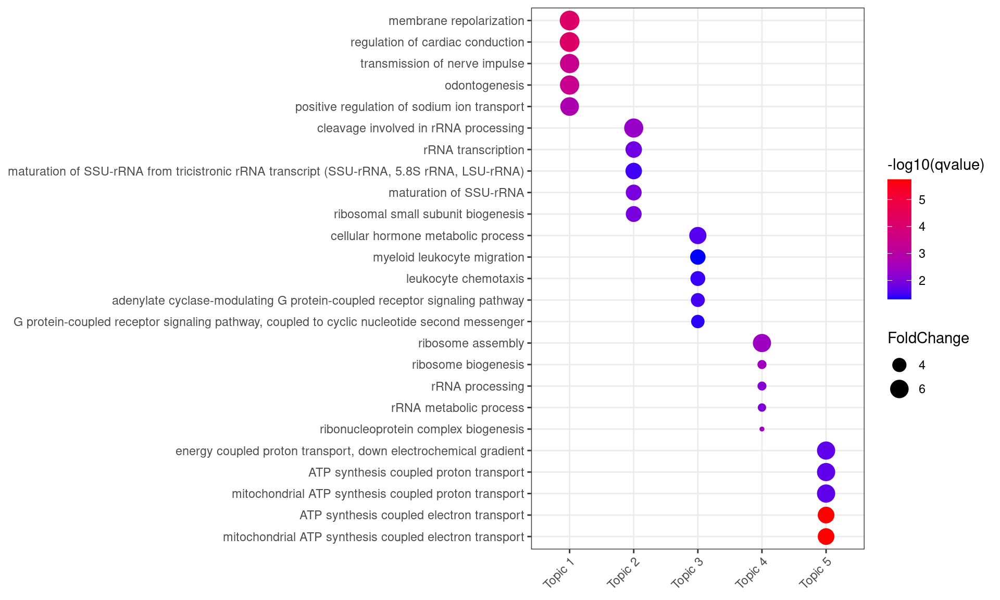
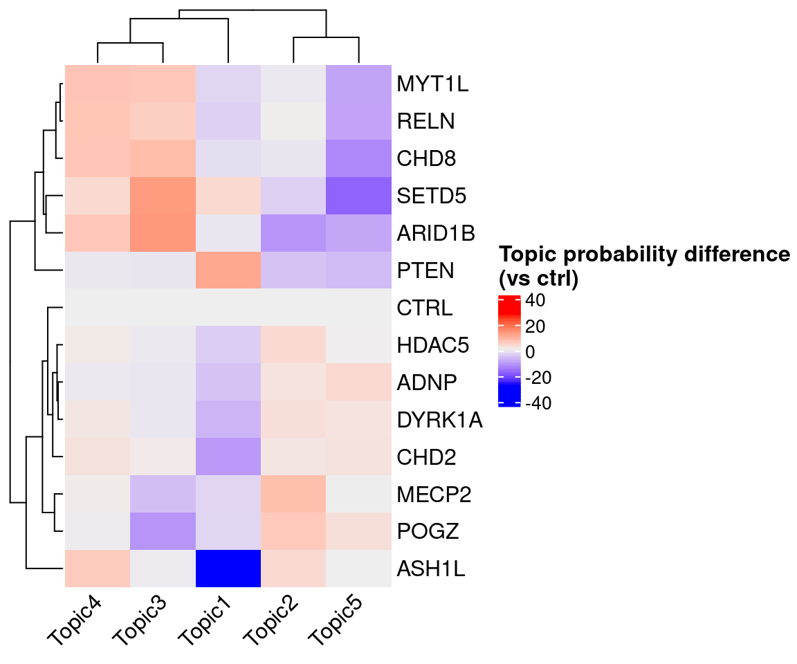
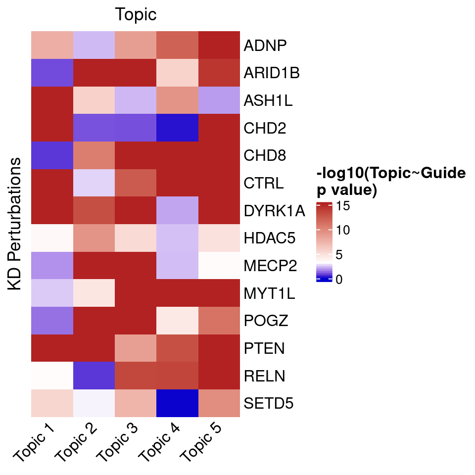
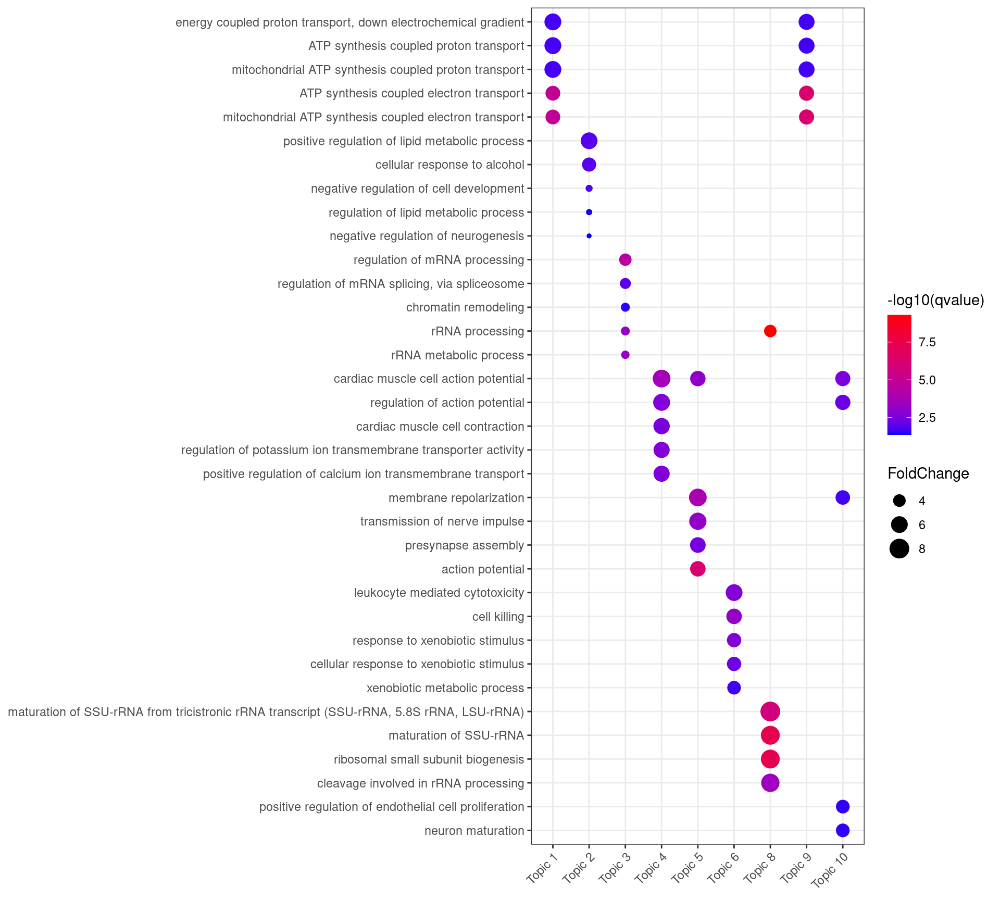
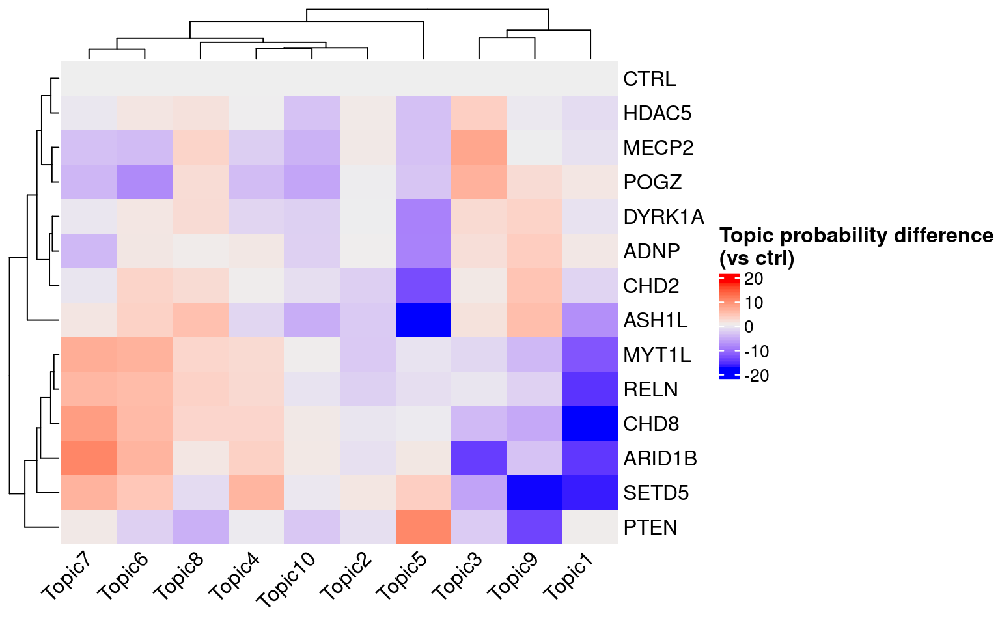
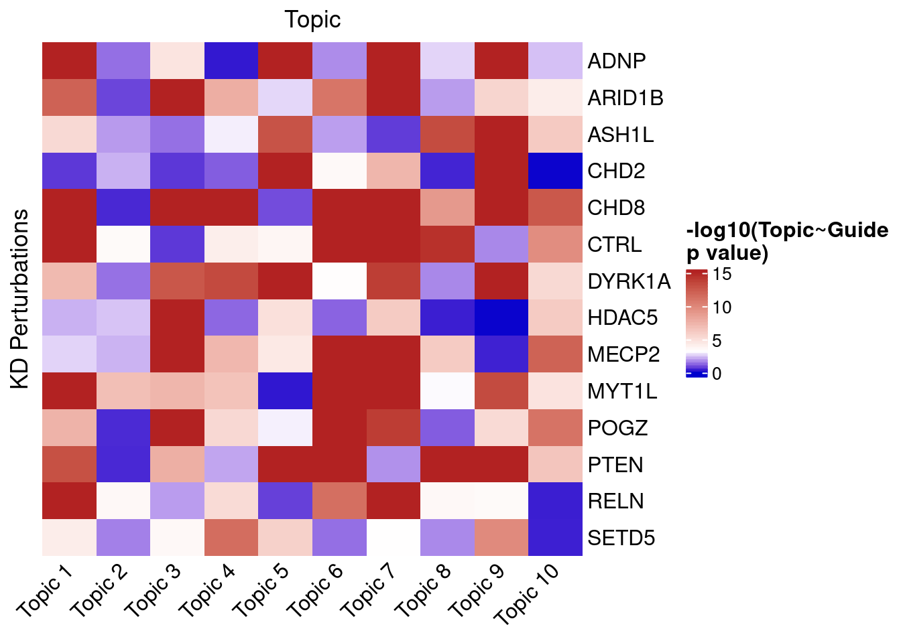
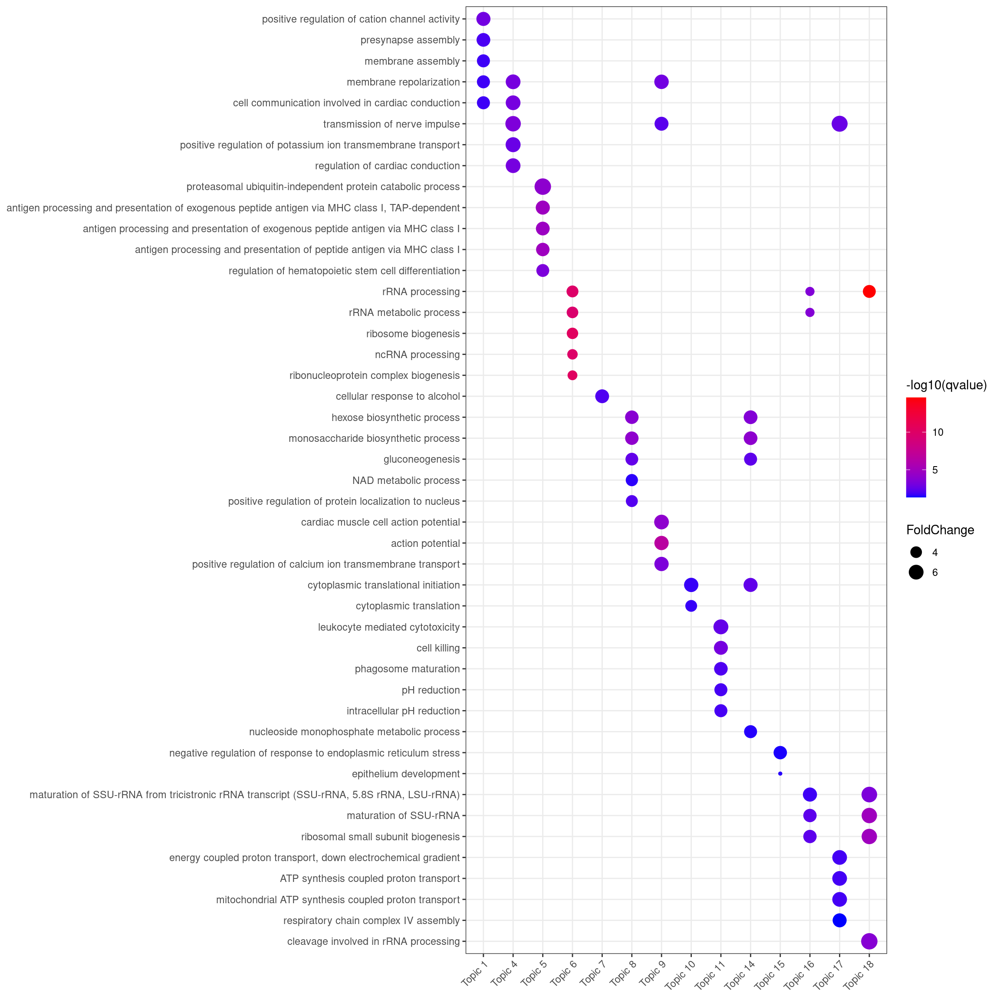
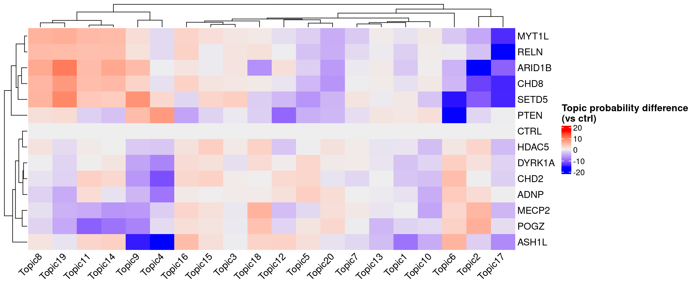
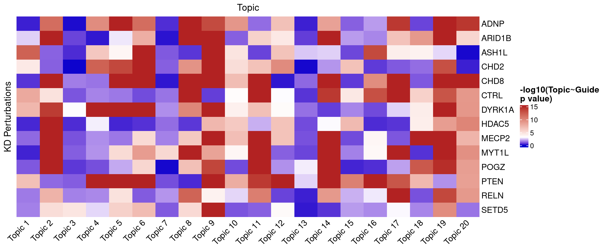

Source:
High-throughput single-cell functional elucidation of neurodevelopmental disease-associated genes reveals convergent mechanisms altering neuronal differentiation, GEO accession: GSE142078.
Perturbations:
CRISPR knock-down of 14 autism spectrum disorder (ASD)–associated genes (3 gRNAs per gene) + 5 non-targeting gRNAs.
Cells:
Lund human mesencephalic (LUHMES) neural progenitor cell line.
Cells from 3 batches were merged together into 1 analysis. All cells have only a single type of gRNA readout.
Final gene and cell size: [1] 3197 4146
Annotating the functions of each topic:
MUSIC obtains the occurrence probabilities of genes available in each topic. It then selects the top 10% genes of each topic based on their occurrence probabilities, and perform functional enrichment analysis using all genes in topic modeling as background.
Characterizing topc-perturbation relationships:
For a specific topic, MUSIC prioritizes the perturbation effect by calculating the specific topic probability difference (TPD) between the case and control groups.
For the \(i\)-th perturbation on the \(j\)-th topic, the TPD against the control group is computed as the Student's \(t\)-statistics between \(\{z_{mj}\}_{m\in \text{perturbtion }i}\) and \(\{z_{nj}\}_{n\in \text{control}}\),
where \(z_{mj}\) is the probability of topic \(j\) in cell \(m\) normalized w.r.t. the control group: \(z_{mj} = \frac{\theta_{mj}-\mu_{\text{control}}}{\sigma_{\text{control}}}\).

| Topic | 1 | 2 | 3 | 4 | 5 |
| Signif_GO_terms | 358 | 22 | 33 | 7 | 24 |
Neural-related topic(s):
Topic 1



| Topic | 1 | 2 | 3 | 4 | 5 | 6 | 7 | 8 | 9 | 10 |
| Signif_GO_terms | 21 | 10 | 17 | 92 | 244 | 47 | 0 | 12 | 31 | 58 |
Neural-related topic(s):
Topic 4, 5, 10



| Topic | 1 | 2 | 3 | 4 | 5 | 6 | 7 | 8 | 9 | 10 |
| Signif_GO_terms | 106 | 0 | 0 | 261 | 118 | 7 | 1 | 42 | 217 | 2 |
| Topic | 11 | 12 | 13 | 14 | 15 | 16 | 17 | 18 | 19 | 20 |
| Signif_GO_terms | 54 | 0 | 0 | 39 | 2 | 9 | 42 | 30 | 0 | 0 |
Neural-related topic(s):
Topic 1, 4, 9

